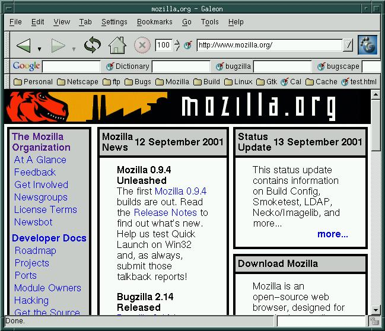

Galeon: GtkMozEmbed browser
- Introduction: What is Galeon?
- Why should I care about Galeon?
- How do I install this on Redhat 7.1?
- Galeon links & resources
-
Introduction: What is Galeon?
Galeon is a gnome-supported browser based on the GtkMozEmbed widget. Galeon is a fairly mature browser that sports a full set of features including menus, personal toolbar, bookmark manager, cookie manager, prefs, and good dialog support. Java, SSL, plugins and helper apps work well. Current version 1.2.5 supports Mozilla 1.0.0.

-
Why should I care about Galeon?
Galeon blows the doors off of any embedded Mozilla app I have seen yet. It is as fast or faster than the SeaMonkey Browser and has a strong set of comparable features. Java works, SSL works, the plugin handler is great, the bookmark and cookie managers are fast, it has good external app support (e.g. xemacs), they got focus and gnome-isms right, AND it's open source. This is a tight, great little browser and it should be on your radar. This browser is the real deal. -
How do I install this on Redhat 7.1?
Galeon has relatively tight requirements on library versions, this is due to both the moving target nature of gnome intergration and some bugs existing in some library versions. My stock redhat 7.1 install required about an hour of rpm updating/installing.
- Installing the Galeon rpm Here are the rpms I needed to update, i386 versions can be found at rpmfind.net:
Galeon rpm also needs these mozilla rpms:mozilla-1.0.0-9 mozilla-psm-1.0.0-9
And finally, the galeon rpm:galeon-1.2.5-1.i386.rpm
If you have access to my machine coffee you are welcome to run it from there and display to your local display to try this out. -mcafee
- Building Galeon from cvs Pull the galeon source:
-
Galeon links & resources
- Galeon main page
- Download & Download numbers
- Screenshots
- Bugzilla buglist (bugzilla.gnome.org)
- Galeon tinderbox
- Mozilla bugzilla tracker bug for galeon-related bugs: (top-level, crashers, features)
- News, version what's-new notes
- IRC channel is irc://irc.gimp.org/#galeon
setenv CVSROOT :pserver:anonymous@cvs.galeon.sourceforge.net:/cvsroot/galeon cvs -z3 checkout galeonA few more library upgrades are needed in addition to the rpm-install of galeon, most notably libxml. The build is autoconf'd so once you've got the right set of rpm's the build should be straightforward (rpmfind.net).
Next, you will need to tell galeon where to find your mozilla tree (or you can let it find an installed mozilla rpm by default), something like this:
cd galeon ./autogen.sh set moz_dir = "/u/mcafee/seamonkey" ./configure --sysconfdir=/etc --with-mozilla-libs=$moz_dir/mozilla/dist/bin --with-mozilla-includes=$moz_dir/mozilla/dist/include --with-nspr-includes=$moz_dir/mozilla/dist/include/nspr --with-mozilla-home=$moz_dir/mozilla/dist/bin gmake # Do the build.
Once you have things building, be sure to unset MOZILLA_FIVE_HOME if you're pointing at a developer (or other) Mozilla build. Galeon would not start properly for me until I unset this, I was probably pointing at the wrong tree.
<mcafee@netscape.com>